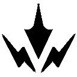
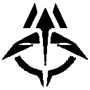
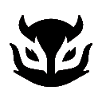
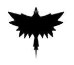
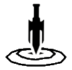
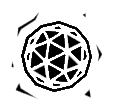
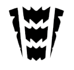

| SOVA | |||
|  |  | ||
| Q - FLECHA DE CHOQUE | E - FLECHA RASTREADORA | C - DRONE CORUJA | X - FÚRIA DO CAÇADOR |
| EQUIPE um arco com uma flecha de choque. DISPARE para lançar a flecha que explode ao impacto, causando dano aos jogadores próximos. SEGURE O DISPARO para estender o alcance do projétil. Use o DISPARO ALTERNATIVO para adicionar até dois ricochetes à flecha. | EQUIPE um arco com uma flecha de reconhecimento. DISPARE para lançar a flecha, que é ativada mediante impacto e revela a localização de quaisquer inimigos próximos da sua linha de visão. SEGURE O DISPARO para ampliar o alcance do projétil. Use o DISPARO SECUNDÁRIO para adicionar até dois ricochetes à flecha. | EQUIPE um drone coruja. DISPARE para acionar e pilotar o drone. Enquanto pilota o drone, DISPARE para atirar um dardo marcador. Dardos revelam a localização de quaisquer jogadores atingidos. | EQUIPE um arco com três disparos de longo alcance que perfuram paredes. DISPARE para atirar um raio de energia diante de Sova, causando dano e revelando a localização dos inimigos que estiverem na linha. A habilidade pode ser REPETIDA mais duas vezes enquanto o cronômetro de habilidade estiver ativo. |

| FADE | |||
|  | |||
| Q – CLAUSURA | E – ASSOMBRAR | C – ESPREITADOR | X – VÉU DA NOITE |
| EQUIPE um nódulo de puro temor. DISPARE para arremessá-lo. O nódulo cairá depois de um determinado tempo. REPITA a habilidade para soltá-lo antecipadamente. Esse nódulo se rompe ao impacto, enclausurando inimigos próximos. Inimigos enclausurados sofrem surdez e deterioração. | EQUIPE uma assombração. DISPARE para arremessá-la. Ela cairá depois de um determinado tempo. REPITA a habilidade para soltá-la antecipadamente. Essa assombração ataca ao contato, revelando inimigos em sua linha de visão e criando rastros sinistros até eles. Ela pode ser destruída pelos inimigos. | EQUIPE um Espreitador. DISPARE para enviá-lo à frente. SEGURE O DISPARO para mover o Espreitador na direção da sua retícula. Ele perseguirá o primeiro rastro sinistro ou inimigo que encontrar e afetará o alvo com visão turva ao alcançá-lo. | EQUIPE o poder dos pesadelos. DISPARE para liberar uma onda implacável de energia aterrorizante. Inimigos atingidos pela onda são marcados por rastros sinistros e sofrem surdez e deterioração. |
| SKYE | |||
|  | |||
| Q - PREDADOR EXPLOSIVO | E - LUZ DESBRAVADORA | C - REFLORESCER | X - RASTREADORES |
| EQUIPE um amuleto de lobo-da-tasmânia. DISPARE para enviar e controlar esse predador. Enquanto estiver no controle, DISPARE para saltar para a frente. O lobo gera uma explosão e causa dano aos inimigos diretamente atingidos. | EQUIPE um amuleto de falcão. DISPARE para enviá-lo. SEGURE O DISPARO para guiar o falcão na direção da sua mira. REPITA a habilidade enquanto ele estiver voando para transformá-lo em um feixe de luz que gera uma confirmação de hit caso um inimigo esteja dentro do alcance ou na linha de visão. | EQUIPE um amuleto de cura. SEGURE O DISPARO para canalizar, curando aliados dentro do alcance e na sua linha de visão. Esta habilidade pode ser repetida até a reserva de cura ser esgotada. Skye não pode curar a si mesma. | EQUIPE um amuleto de rastreador. DISPARE para enviar três rastreadores que localizarão os três inimigos mais próximos. Se um rastreador alcançar um alvo, ele causará visão turva a esse inimigo. |
| KAY/O | |||
 |
 |  | |
| Q - GRANADA/CLARÃO | E - PONTO/ZERO | C - FRAG/MENTO | X - ANULAR/CMD |
| EQUIPE uma granada de clarão. DISPARE para jogá-la. A granada de clarão explode após um curto período, cegando qualquer um que estiver na linha de visão. | EQUIPE uma lâmina de supressão. DISPARE para atirá-la. A lâmina se fixa à primeira superfície que atingir e explode, suprimindo qualquer um que estiver dentro do raio da explosão. | EQUIPE um fragmento explosivo. DISPARE para lançá-lo. O fragmento se fixa ao chão e explode várias vezes, causando dano quase letal no centro de cada explosão | INSTANTANEAMENTE sobrecarrega com energia de Radianita polarizada que fortalece KAY/O e emite grandes pulsos energéticos a partir de onde ele estiver. Inimigos atingidos pelos pulsos são suprimidos por um curto período. |
| BREACH | |||
|  | |||
| Q - ESTOPIM | E - FALHA TECTÔNICA | C - PÓS-CHOQUE | X - ONDA TROVEJANTE |
| EQUIPE uma carga cegante. DISPARE a carga para armar um jato de ação rápida pela parede. A carga é detonada, cegando todos os jogadores que estiverem olhando para ela. | EQUIPE um impacto sísmico. SEGURE O DISPARO para aumentar a distância. SOLTE para iniciar o terremoto, estonteando todos os jogadores na zona e numa linha reta até a zona. | EQUIPE uma carga de fusão. DISPARE a carga para armar um jato de ação lenta pela parede. O jato causa muito dano a todos que estiverem na área de efeito. | EQUIPE uma carga sísmica. Dispare para lançar um terremoto em cascata por todo o terreno num grande cone. O terremoto estonteia e derruba todos que estiverem na área de efeito. |